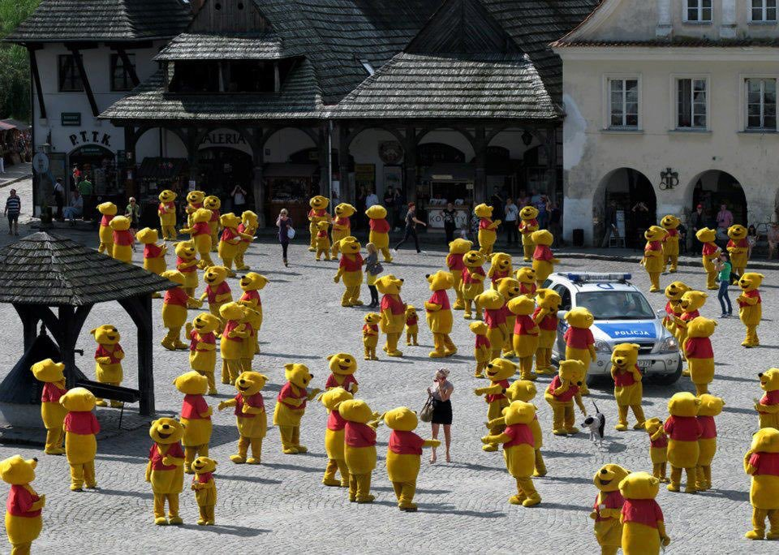

Episode 21: April 15, 2019
Back to index

"...Rated 5 stars on iTunes by TSM_Liquid_FaZe_Ninja"
ANNOUNMENTS
by Shef Kerbi
Our viewers have noticed some inconsistencies between the TBG version of SKNN and the website version. In response to that, the TBG version of SKNN has switched back to the old logo for news reports, although our company's logo will still be the new one. We appreciate your feedback and would like to continue the OPIONION column. We will also credit people's work where possible.
Also, ever since we first received reports about the MISITOUS BIRB DINERBLADE, we've set up a camera on top of SKNN headquarters and began livestreaming the event on our website and on Twitch. This will be the first time MISITOUS BIRB DINERBLADE has been on video.
BREAKING NEWS
by Keysun DDDO
Keyn DDDD, glorious keyn of whatever this place is called, has declared that he's "starvin' over here," and "that there Dinerblade is going to be my dinner!"
He was later seen loading shoptsoses with local giant snail "Eskergom" and cannon balls.
--
Birb lovers begin a protest against Keyn DDDD for wanting to shoot Dinerblade out of the sky. Local authorities side with the birb lovers and tell Keyn DDDD to dismantle the shoptsoses. "Wait, shouldn't I be the local authority?" questions Keyn DDDD.
In other news, local giant snail "Eskergom" is stranded on the Great Mountain. Please somebody bring him back, we miss him.

MORE BIRB NEWS
by Bon Starbuckle
bon has come back from his birdwatching adventure and taken a picture of the Big Bird™

wait... is it looking at the camera?

oH NOES

Now I don't wanna give my own opionion but...
OPIONION WITH SHEF KERBI AND BON STARBUCKLE
So we told you Shef Kerbi News Network fans on our Scratch page that you could post anything with the #SKNN hashtag and you could end up in our paper! In this episode, we'll respond to some of your feedback with the new SKNN format, as well as show some of your cool stuff!
We began this issue's section with
"here's the * tea"
and here were your responses:
ChiefMike27409 wrote:
"DUDE Thank you for bringing back the old logo the new one looks like you actually used something professional to make that. ewwwwwww"
This was one of the response we got to the new logo, and we appreciate it! Our team raided Shef Kerbi's computer and found that he had a copy of Adobe Photoshop on there. Disgusting. (and I just wrote in the third person and wait what my photoshop got deleted)
æboss wrote:
"My mom walked into the room while I was vacyumming and my vacyum sucked her and now she wants vacyums banned. What should I do???"
Here at SKNN, our philosophy is that if a customer is not satisfied with a product we advertise, we clearly haven't advertised it enough. Assuming she reads SKNN daily, here's an ad for VACYUM

This next picture has come from an Anonymous person, as when the faxed the image to us they didn't link their Scratch account. Nevertheless, here's their picture:

And of course, an OPIONION column would not be complete without a comment from TSM_Liquid_FaZe_Ninja
"Scratch verify me I have more followers than @griffpatch"
According to Socialblade, griffpatch has around 98 000 followers while TSM has over 1.5 million followers. Here's their graph to demonstrate:

Due to your loyalty to the News Gang, we'll try our hardest to get Scratch to verify you. If we don't then we'll buy Scratch and then delete it.
If you would like to submit your own opionion, just go to our social media, on Twitter, Instagram or Scratch. But prefably Scratch because that's what everyone uses
Bon And Bon’s Cat Give A Helpful Tip
Throw tomato cans at your vegetable garden to show them you are getting impatient.
----------------
NSEW THAT IS BROKEN
Recently, the official SKNN thread on the number one forumchat, Text Based gChat, has been, get this, BUMPED.
The entirety of the work team* has been working 24/7** to find the cause and get the person that did it thrown in bad boy timeout.***
*not really
**as if
***It's important that you know that this is not the same as jail.
Notice: We've found the suspect. Don't worry, we've given him the bad boy timeout.
COMIX
by Apple and Carmes
Candy Sadness by Apple


GAIN
by Reali

SPORT????????????
BREAKING JONH GAMEMAN SPECAL REPORT (plese do not break john gameman)
big bird thing is angery now and is makking hurricans weird clown guy told everyone its because the bird is eveils and has always been evils so hes offer to shoot the evil bird downs which is a good idea except its not because he did not let jogn gameman shoot bird because john gameman is "not responsabel" john gameman is responsebel john gameman is porfessional game and man man but also professonal call of duty player john gameman is so good that john gameman mom make john gameman not play call of duty and put money in "good at call of duty" jar why would clown not recognize john gameman shooting skill? do not support clown! clown needs to support john gameman shooting skill! clown's giant omlet may be cool but they are also clearly trolling john gameman so do not support!!!!
i miss call of duty...
WETHR
with Zeke Teddy
So today's going to be a top of 17 and a low of 12, but there are also going to be pretty strong winds so it'll feel more like 7-ish
might have something to do with that birb that came along
Tomorrow's windy, chilly, AND stormy, what fun!
Max 15, min 11
THANK YOU FOR WATCH. PLEASE TUN E IN NEXT TIME FOR MORE NESW

Shef Kerbi News Network follows the guidelines and conventions set by the 1984 High Quality News Act of Dreem Lend, which states
that any news published is to be of a high quality, is to remain unbiased and to show all sides of a news report, does not attack anyone, and protects the privacy
of people whose identities don't want to be revealed.
If you would like to file a complaint regarding content use, please message SKNN through our Scratch account. We also have a Twitter and Instagram account if you
prefer.
Shef Kerbi News Network respects the ancestors of Cappy Town, and understands that they are the reason why Dreem Lend exists.
Shef Kerbi News Network is proud to be a subsidiary of Shef Werld
this website is best viewed with Ned's Escape